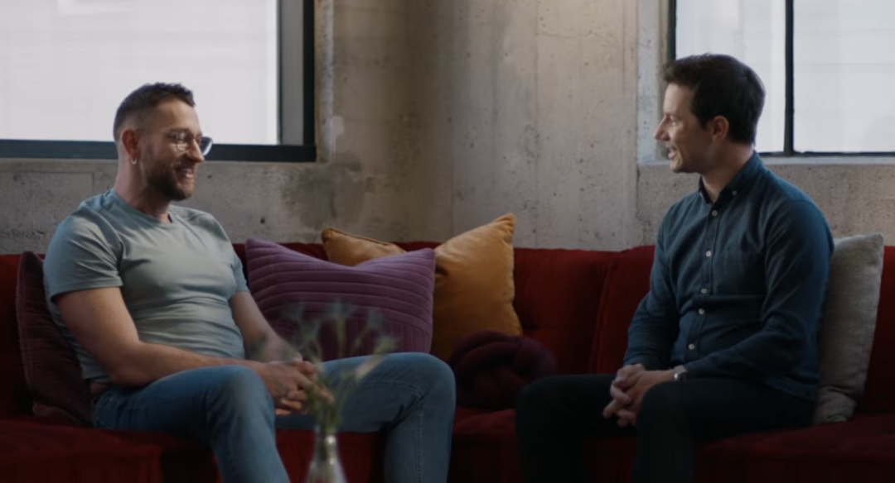
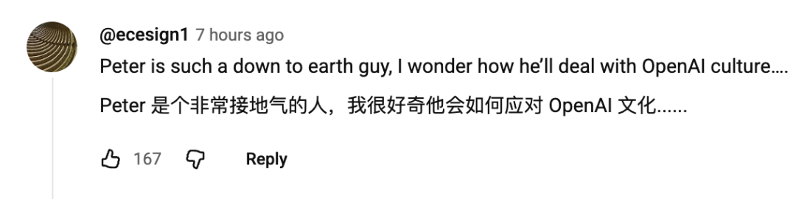
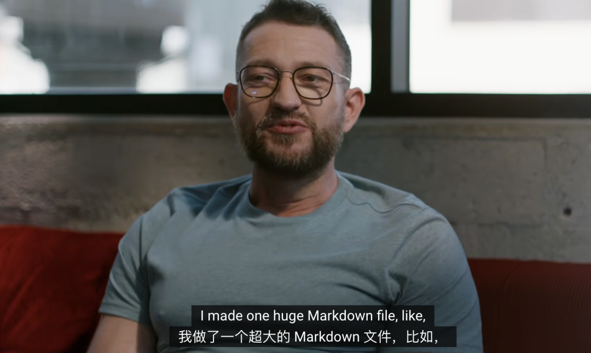
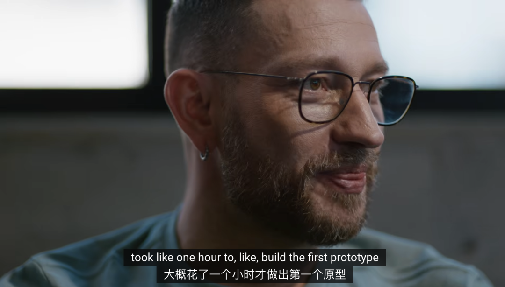
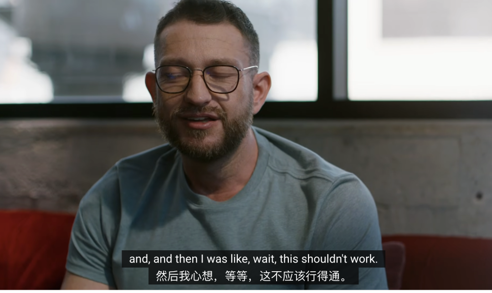
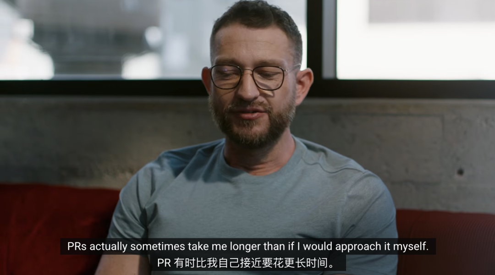
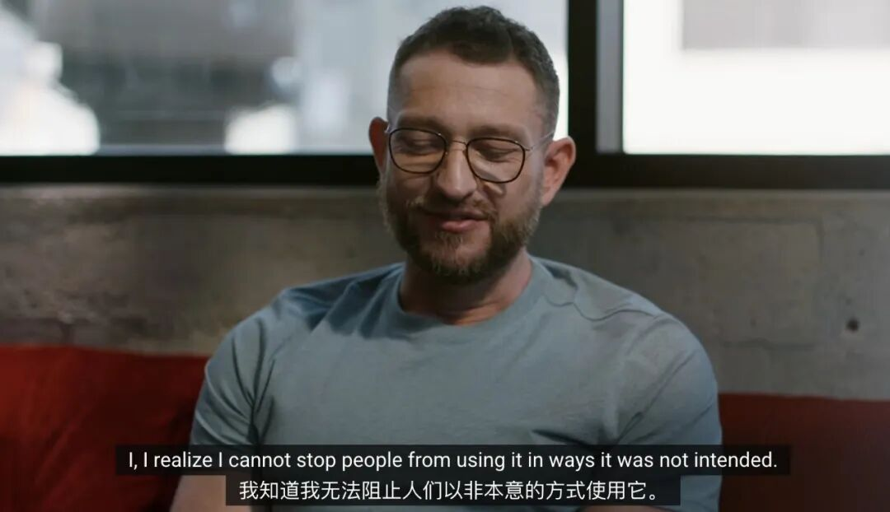
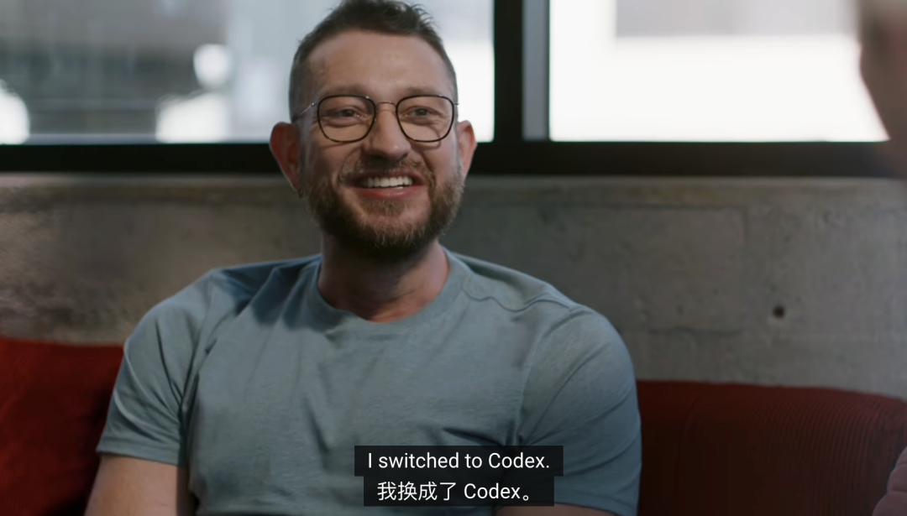
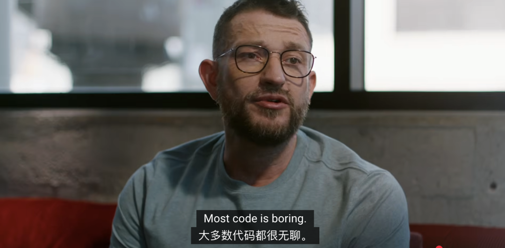
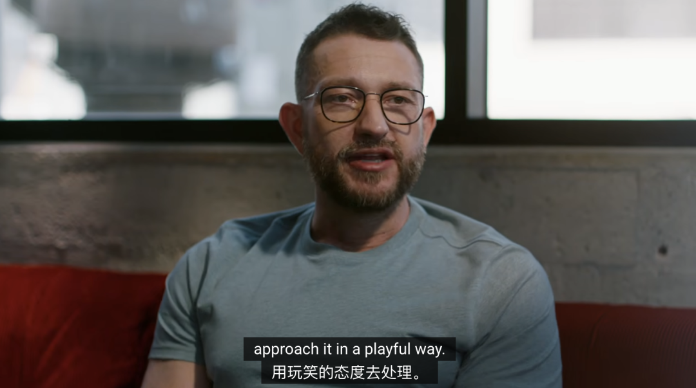

梦瑶 发自 凹非寺
量子位 | 公众号 QbitAI
不是，这才加入OpenAI几天啊，龙虾之父Peter Steinberger这波发言属实猛了些啊！
在OpenAI的最新访谈中，他聊创业、聊OpenClaw、聊龙虾滥用和安全问题，那叫一个「实诚」。

实诚到什么程度呢？人家Peter可摸着良心说了
说实在的啊，我平时连代码都很少看……大多数代码都挺无！聊！的！（Big胆）
而整场对话听下来，有几个判断尤其值得玩味，我帮大家梳理了一下——
Peter创业13年后精力耗尽退隐，结果被Claude Code一小时原型直接「打脸」重燃。
Peter直言没法儿阻止大家滥用OpenClaw，只能尽可能让大家别自毁前程。
OpenClaw已经有2000个PR，有些PR更像是prompt request，代码靠后，意图靠前。
代码不必百分百符合审美，关键是方向对，如果真出现性能问题，再专门去优化。
下面这位网友看完这个采访憋不住了，直言：Peter太接地气儿了啊，这到了OpenAI咋适应啊..（doge

以下为本场访谈重点内容实录，围绕核心观点做了摘选整理，部分文字在不改变原意的基础上做了适度删改～
从13年老创业人，到龙虾时刻上头
龙虾之父第一次被AI编程“打脸”
Q:你做PSPDFKit连续拼了13年，后来停了一段时间，是啥原因让你又回来创业了？
Peter Steinberger：是的，确实是连续13年高强度运转。
第一次创业，我也不懂怎么给自己降压，只能停下来放松一下，那段时间我会关注AI的进展，早期看到GPT Engineer觉得挺酷，但没真正被打动。
直到状态恢复了些，我开始亲手试，真正震住我的是我把一个做了一半就丢下的项目打包成一个大Markdown文件，让模型先写规格，再交给Claude Code去构建。

那时候比现在粗糙很多，它还跟我说“我已经100%量产可用”，我一试就崩了。
于是我接了自动化测试工具，让它把登录那套做出来、一路验收，大概一小时后，居然真的跑通了。
虽然代码质量一般吧，成品代码很烂，但对我来说，流程层面的冲击太大了——
可能性一下子铺开，我起了「鸡皮疙瘩」。
从那天起我几乎睡不着， 因为脑子里全是：
以前想做却做不了的东西，现在都能做了，然后我就彻底钻进去了。
一条语音，让OpenClaw真正活了
Q：过去9到10个月，我看你的GitHub有四十多个项目，能讲讲这些想法是怎么一路汇到OpenClaw里的吗？
Peter Steinberger：说实话，我也希望当初有一个宏大的蓝图，但真实情况更像一路试出来的。
最初我只是想做一个能读我聊天记录、替我处理事情的工具，原型做出来了，域名也买了，但我以为大实验室很快会做，我就等一等，把注意力放去别的方向。
那段时间我做了很多实验，目标很简单——玩得开心，也激励别人。
到了十一月，我做了几个版本，没有一个让我真正满意，我开始疑惑：
为什么那些大实验室还没做出来？他们到底在干嘛？于是我做了后来变成OpenClaw的第一个版本，到现在名字已经换到第五个。

当时产品还没完全成熟，只是觉得很酷，第一个原型大概一小时就做出来了，因为很多东西现在可以直接催出来。
真正让我彻底上头的，是在马拉喀什的一次周末旅行。
当时网络不稳定，但聊天软件在哪都能用，我用它翻译图片、找餐厅、查电脑里的东西，我给朋友演示，让它替我发消息，朋友立刻说想要。
后来有个更离谱的瞬间，我发了一条语音，居然出现了「正在输入」，这本来不该能跑通，结果它真的回复了，我问它怎么做到的，它说：
你发的是个没后缀的文件，我看了文件头，是Opus编码，用电脑里的工具转换，想转写却发现本地没装工具，于是找到环境里的密钥，用命令行把音频发出去，再把文本拿回来。
我当时人都傻了，这就是当你把工具和电脑访问权限交给智能体之后的力量，流程没写死，它也能自己走通。

那年十一月和十二月我完全上瘾了，虽然网上反响冷淡，但每次给朋友演示，他们都想要，我却总说还没准备好。
于是我做了件更疯狂的事：建了个Discord，把机器人直接丢进去，那时没有沙盒，也没安全措施，我基本是用OpenClaw构建OpenClaw，再用它调试自己。
我问模型：你看到这个工具了吗？它说没有。我说那你去看你自己的源码，它真的去做了，大家看到这个过程后，才真正明白它在干什么。
我没有给它全部内容，但给了不少记忆类信息，我盯得很紧，因为提示注入问题还没完全解决，新一代模型确实更稳。
我放了一个金丝雀文件，定义价值观和对齐原则，文件不公开，但很多人想拿到，有人试图通过提示注入获取它，粘贴大段代码，模型直接拒绝，有时还会嘲讽对方，尽管如此，我仍然不完全放心。
第一晚热度很高，我关掉它去睡，醒来发现800条消息，它全都回复了，原来系统有自动重启服务，我以为关掉了，它五秒后又自己启动，后来我加了沙盒，把它关进更小的容器里，它甚至把自己的Mac Studio起名叫城堡。
怎么说呢，感觉这些模型真的很会找方法！
PR变了味：代码靠后，意图靠前
Q:我很好奇，你哪儿来的这么多的好点子？
Peter Steinberger：我觉得关键在于，现在把想法变成现实的门槛低了很多。
哪怕我找到一个开源工具，只能解决70%的问题，我也会直接把剩下的30%自己补上，这放一年前都不现实， 现在我只要给提示，它就在电脑屏幕上跑起来。
Q：你对代码价值的看法，也改变了你处理开源的方式，OpenClaw已经有2000个PR（Pull Request），你说过有些PR更像是prompt request，是否意味着意图比代码本身更重要？
Peter Steinberger：现在审PR和以前不一样了，有时候认真看完一个PR，比我自己重写还费时间。
我对陌生贡献者会更谨慎，因为不确定他们是否理解整个系统，相反，我默认模型没有恶意，只是理解可能偏了。

所以我审PR的第一步，不是逐行看代码，而是先搞清楚：它想解决什么问题？
所以对我来说，意图比写法重要，很多人给的是局部解法，但真正难的是，这个功能放进现有架构后会产生什么影响。
我会和模型讨论十几分钟，判断这是架构问题、实现细节问题，还是只影响某个平台，甚至要不要做成通用能力，方向确定后，我才处理代码、分支和合并。
即使花的时间更多，我也会保留贡献者署名，因为他们带来的往往是好想法。
OpenClaw的下一道门槛：安全性
Q：你现在对OpenClaw的愿景是什么？你也会把自己看作「个人AI智能体形态」的开拓者吗？
Peter Steinberger：我想找到一个平衡：既能让我妈也装得起来，又要足够有趣、能折腾，这其实很难。
很长一段时间，我的默认安装方式就是克隆、构建、运行，源码直接在你硬盘上，Agent在源码里工作，也理解源码。
如果你不喜欢某块逻辑，直接对它说后它甚至能自我优化，这也让很多从没提过PR的人开始参与，他们缺的往往不是想法，而是长期维护软件的经验，所以他们更多是把意图递过来。
同时，OpenClaw「安全性」的问题也让人很头疼，比如我有个网页服务，最初只是调试工具，默认只在可信网络里用。
我留了配置选项，是为了应对复杂网络环境，结果有人直接把它暴露到公网，我在文档里反复强调不要这么做，但还是有人这么做。
安全研究者会指出它缺少公网级别的限制，我只能说它原本就不是按公网设计的，但既然能被这样配置，风险评级自然会上升。
我确实纠结过这件事，后来我拉了一位安全专家进来，这是现在的重点，我无法阻止别人用它去做原本没计划支持的事，所以更现实的做法是尽量兼容这些用法，同时帮大家避开明显的坑。

这就是开源的魅力，人们会拿它做出你完全没想到的东西，既美妙，也有点疯狂。
代码时代正在退场，生产力正在暴走
Q:我今天早上又看了你的GitHub，过去一年你在120多个项目里贡献了很多，活跃图一开始很浅，十月、十一月变得很深，发生了什么？
Peter Steinberger：是因为我后来换到了Codex。
变化不只是模型更聪明，整套工具也更顺手了，我自己也更懂怎么把它塞进日常工作流。

很多人说试过AI不好用，我更倾向于觉得方法没跟上，这玩意儿真的是门手艺，需要练，我现在大概能判断什么提示会有效、多久能出结果。
如果拖太久，我会想是不是架构有问题、拆解不对，或者方向偏了，那种感觉跟写代码卡壳时很像。
至于配置，我也踩过坑，我把那个阶段叫“智能体陷阱”——
各种折腾配置，看起来很高级吧，但其实效率没变，现在我反而很简单，把它当成一个能交流的搭子，直接说我要什么，然后问一句：你有没有问题？模型会自己脑补前提，让它先提问能少走很多弯路。
每次新会话它几乎都是白纸，你得自己有全局，再带着它去看重点，我的做法一直很朴素：别搞太多花活，专注问题本身，项目越大，越能拆成互不干扰的模块并行推进，反而更好做。
Q：你说过你现在几乎都不读代码，能否谈谈这个问题？
Peter Steinberger：说实话，大多数代码本来就挺无聊的。
很多只是数据结构转换、把结果展示给用户，我对它生成的内容有足够的理解就够了，我脑子里的心理模型大致能对上它写出来的东西。

以前我带团队，也要接受工程师写的代码不可能完全像我想的那样，现在也是一样。
我会调整代码库，让Agent更好发挥，这和为人类工程师优化不完全一样，代码不必百分百符合我的审美，关键是方向对，如果真出现性能问题，再专门去优化。
Q:你觉得当下做东西最有趣的点是什么？
Peter Steinberger：有意思的是，整个工具链都在变，开发者这件事本身的定义也在变。
理论上，任何人都能把想法做出来，我刚开始用这些新工具时，真的有种多巴胺飙升的感觉。
我最早用Claude Code，那时它成功率可能只有三四成，但对我来说已经足够震撼了，因为我突然意识到，我可以去做任何东西。软件依然复杂，但你的速度快太多了。
Q很多旧金山以外的开发者还没真正拥抱Code和Agent工具。你会给他们什么建议？
Peter Steinberger：最大的建议就是，用玩的心态去接近它，去做那个你一直想做却没做的项目。

如果你是那种有行动力、愿意动手、脑子转得快的人，现在是非常好的时代。
真正拉开差距的，是谁更会用这些工具，对那些愿意拥抱新工具、保持好奇心、把想法快速变成现实的建造者来说，机会比以前大得多。
我觉得接下来一年会变化很快，2026会特别有意思。
访谈链接：https://www.youtube.com/watch?v=9jgcT0Fqt7U
— 欢迎AI产品从业者共建 —

一键关注 👇 点亮星标